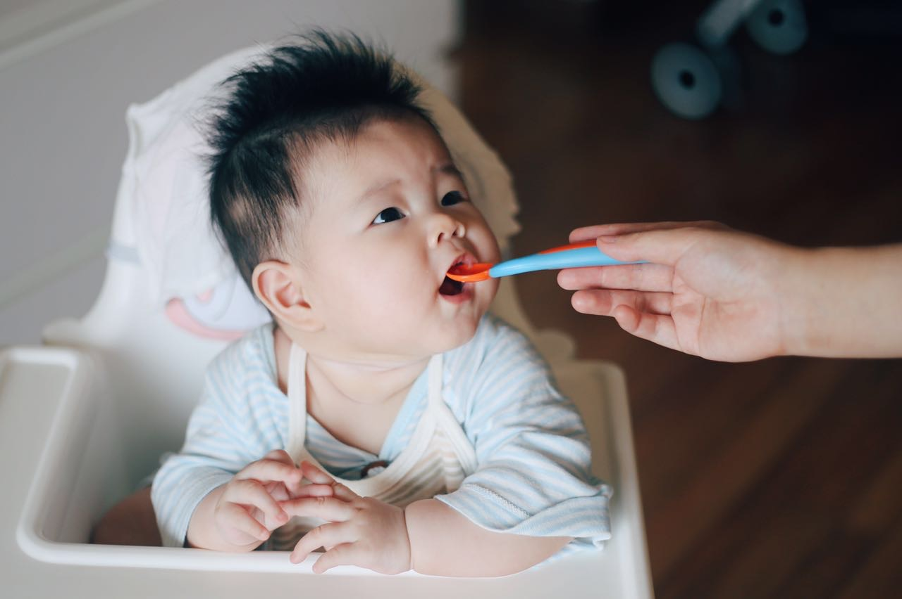

2015-04-26
这是我出生的前一天，妈妈，爸爸，和奶奶一起出去散步。

2015-04-27
上午11点34分，我从妈妈的肚子里出来了。比预产期整整提前了二十多天，把爸爸妈妈吓坏啦。出来的时候是5斤7两，医生说在早产儿里算挺健康的啦。
2015-05-08
据说今天是世界微笑日，我也来练习一下微笑。虽然现在的我还不太明白微笑的含义，但看见爸爸妈妈的微笑就会有温暖的感觉。我对世界微笑时，世界也会对我微笑吧。

2015-05-13
来看我的新装备–拳击手套！我的手指甲这周长得飞快，不小心在自己的脸上划出了一条红印子，爸爸妈妈想给我剪指甲了，可医生在出院前特意叮嘱要等我满月了才能剪，大概是怕剪破我娇嫩的小手吧。于是妈妈就给我套上了这双蓝色的小手套，是不是很像拳击手呀：）
2015-05-15
昨晚实在太困了，十点多醒来后，爸爸陪我玩了半个小时，然后我就饿了，喝完neinei，又吐了好多奶，肚子还是不舒服，妈妈说是肠绞痛，不过每次都是使劲把粑粑拉出来就舒服啦。12点多换完尿片，整个人都舒畅了，很快我就睡着了，一睡就睡到了5点半，这还是我第一次睡那么长时间。爸爸妈妈也得以睡了个整觉。
2015-05-20
今天是我的预产期，也是对爱的人说“我爱你”的日子，还是国际母乳宣传日，而我已经来到这个世界23天了，喝了整整23天的母乳。妈妈，爸爸，我要在今天对你们说“我爱你们”，从我诞生起，你们就没有睡过一天好觉了吧。我提前了23天来到这个世界，你们是不是有些措手不及。在妈妈肚子里的时候，我听见了妈妈对我说让我在5月20或者21号努力自己出来，长到7斤。可我太想早日见到你们，也不想妈妈再多受苦，所以就自作主张先出来了。不过爸爸妈妈你们看，我现在正好长到7斤了呢，我会好好喝奶，努力长大的。
2015-05-24
还有几天我才满月，不过今天是礼拜天，大家约好了今天一起来看我。来的有婶婆，叔叔，姑姑和姑姑的男朋友。我们去家对面的酒楼吃饭，这还是我第一次出门！可是我从出门就开始睡，一直到吃完回到家里。
2015-05-27
今天是我正式满月的日子。爸爸妈妈和奶奶带我出门去做满月体检。我又睡了一路。社区医院挤满了来做保健和打疫苗的哥哥姐姐，到处是哭声和嗡嗡的吵闹声，而我一直安睡着，直到保健医生捏我的腿我才醒过来哇哇叫。爸爸说别的小朋友头都好胖好圆，相比起来我实在是太小了，不过还有个刚满月的小男孩比我还瘦小，医生说他发育不良，而我算中等。坐着排队时，有位奶奶说我好漂亮，妈妈也这么觉得，不过只限于安静时的我。 可惜儿保医生说我黄疸没退，不能打第二剂乙肝疫苗。肚脐也还没脱落，医生让我回出生医院处理一下。于是下午我们又回到了我出生的医院421。儿科门诊外排满了发烧看病的小朋友，等了一个小时，结果2分钟就看完了。查了黄疸值，脸上8.2，手上7.6，腿上5.2，医生说满月正常应该退到5以下，那就回家再等等吧。妈妈说我是早产儿又是纯母乳喂养，黄疸退得慢很正常。 我又昏睡了一路回家，路过一家装修的门店，噪音很大，身体抽抽了几次，吓坏了奶奶，妈妈说应该是惊跳反应。不过回想起来妈妈也有些后怕，大医院人多病毒也多，她很担心我被感染，加上这是我第二次出门，在外面待得有些太久了。不过妈妈别忘了我可是经历过重重挑战才出生到今天满月，不用太担心啦！
2015-05-29
从出生到现在，我一直没有用过奶瓶，都是妈妈亲自喂我。如今我已经满月了，妈妈担心她要是上班，我不愿意用奶瓶的话就会饿着，所以想尽早训练我慢慢接受奶瓶。看来她完全不用担心这一点。今天第一次用奶瓶喝奶，觉得很轻松，一下就喝完了40ml，还意犹未尽。不过妈妈说奶瓶虽然方便轻松，却没有妈妈身体上的有益细菌，这些细菌可以有助于我肠道的发育。

2015-06-12
昨晚开始我的肚子就一直胀胀拉不出粑粑，鼓鼓像个冬瓜，难受得我大哭大叫了一整晚，吐奶也很严重，喉咙也变得难受，老是咕噜咕噜，口水也变成了黏黏的，像是有痰。折腾了一晚上，第二天清晨奶奶抱我去她房间睡，好让妈妈休息会，等奶奶抱我回妈妈那里时，妈妈觉得不对劲了，看我蔫蔫的，眼睛睁得大大却没有神，她马上量了我的腋下体温，37.3，有点低烧，喂水喂奶我都不怎么喝，体温最高到37.5，爸爸妈妈帮我解开衣服降温，终于退到了37.2。整个白天我都在睡觉，吃得很少，嘴也没力气张开，更不用说大口吸吮了。平时我的哭声震天，今天我却只能发出嗯嗯的轻微呻吟，听得爸妈心碎。天黑的时候爸爸终于决定还是带我去医院看看，虽然他们都知道医院容易交叉感染，但看我这个样子还是不想再等第二天，怕耽误了。 医院里挤满了来看病的哥哥姐姐，大多额头贴着降温贴，我大概是来看病的小朋友里面最小的。我排在241号，前面还有100多个小朋友。等了1个多小时终于轮到我，查了血和大便常规，还拍了片。还好血和便都正常，拍片显示肠胃功能紊乱，不过这是我这个年龄小婴儿的通病，因为肠胃还没发育完全。体检完，上一个医生已经下班了，又转到急诊，医生看了我的检查结果又看了看我喉咙说没什么问题啊，他也没法解释我为什么蔫了一整天，他说拍片只是看有没有肠梗阻，现在看来没有，如果爸爸妈妈还担心就第二天再来挂个消化科照B超。虽说他觉得我没什么大碍，但看爸爸妈妈紧张，还是给开了几种药。 检查没什么问题，爸爸妈妈才终于放心了，看完病回家已经是半夜12点了。
2015-06-24
今天我去打了出院后的第一针预防针–乙肝疫苗第二剂，因为黄疸的缘故推迟了将近一个月。打针的时候我只哭了一下下，比其他打针的哥哥姐姐都要坚强。虽然是台风天，泓景家园的社区医院还是挤满了人，排了半个小时的队才轮到我。和之前几次出门一直睡觉不同，今天我终于睁眼观察起周围来，真是个嘈杂的世界啊。回家的时候我还第一次坐了公交车。
2015-06-27
两个月生日。

2015-07-06
不知什么时候开始我的小床上已经堆满了玩具，而我最喜欢的还是我左手这只小驴子。

2015-07-24
第一次搬家，从海珠到天河，从珠江南到珠江北。一整天都没怎么睡。新家很安静，可以好好睡觉了。今天我还学会了吃拳头，两只手轮换着吃。

2015-07-27
今天我满三个月，也是我住进新家的第二天，可我却感冒了，有些流鼻涕，不过我一定会很快好起来的。
2015-07-31
腰鼓不应该是挂在腰上的么？妈妈，你怎么把它垫我脖子下了。
2015-08-05
妈妈：今天娃满百天了
爸爸：有什么庆祝？
妈妈：不知道哦，正在喝奶
爸爸：多喝点奶庆祝下

2015-08-12
短短三个月我就去了三家不同的社区医院打预防针，一开始在赤岗，后来去了琶洲，现在又转到了东晖。今天是搬家后第一次打预防针，第二针五联，到医院很多人夸我头发长得漂亮。做保健时，儿保医生说我长得不错啊，还说妈妈的奶好。不过这两天妈妈开始训练我喝奶瓶，可是妈妈在家我真不想喝奶瓶呀，还是在妈妈怀里舒服。
2015-08-17
经过两周的腿腿抬高高和向左边使劲侧的努力，今天我侧身时上面的一条腿终于越过了下面那条，能够保持侧着身子的动作不晃荡了，接下来我要向翻来趴着努力啦。
2015-08-24
第一次在小车上睡着。我的招牌动作：招财猫。

2015-09-01
9.1是小朋友们开学的日子，今天我也成功升级学会翻身啦！虽然我本来是迷迷糊糊向右翻找奶吃，但终于还是靠着自己的力量翻来趴着了，就是右手摆得不舒服，不过一翻过来我就清醒了，妈妈在旁边给我加油，我使劲挪了挪，小手终于舒服了点，但重心不稳，很快我又翻回去躺着了。
2015-09-14
惬意的午后阅读时光

2015-09-15
和好伙伴小怪兽一起在沙发上小憩片刻。

2015-10-13
可以流畅翻身啦
2015-10-14
昨晚迷迷糊糊向右翻身想喝奶，一不留神就翻过去趴着了，只好迷迷糊糊用胳膊撑起来。从这以后，就开始停不下来啦。一旦尝试翻身，总是很溜地就翻过去了。半夜也想翻，还好被妈妈及时制止了。
2015-10-18
16号清晨6点，我和妈妈还在睡梦中，爸爸推门进来轻声说太外婆去世了，身后传来另一个房间里奶奶的抽泣声。犹豫了片刻，爸爸妈妈决定带上我一起回湛江。 9点坐上开往湛江的大巴，一路我都很兴奋，全然不知我是去奔赴一场葬礼。第一次坐大巴，第一次出城，第一次回湛江，第一次看窗外飞逝而过的风景，第一次躺在妈妈的哺乳巾下面……太多的第一次让到湛江的当晚我就兴奋过度不肯入睡。 第二天出殡因为习俗我和妈妈没有去现场，等着亲戚们中午回来一起聚餐。太外公见到我第一句话就是“长得像太外婆，可惜太外婆没能看到”。我安静地坐在太外公腿上，仔细看他的脸。不知我的到来是否能对他有些安慰。 亲戚们都爱抱我，我也不怕生，在陌生的亲人间传递，一点也不哭闹，连妈妈都有些担心。昨天是旅途的新鲜感，今天是社交新鲜感，两天下来晚上更睡不好了，总是翻来翻去，好不容易睡着又哭醒，大概刺激过多，我的大脑处理不过来了。 大家都说我长得像太外婆，可惜没能见到她。奶奶说太外婆有本珍藏的相册，里面最新的几张是她亲手挑选的我的照片。太外婆，你在天上看见我了吗？妈妈教我念了句咒文：嗡阿吽班杂咕噜叭嘛悉地吽（OM AH HUM VAJRA GURU PADMA SIDDHI HUM），我还不太会念，但还是希望可以抚慰你的在天之灵。
2015-10-23
开始趴着抓东西
2015-10-24
开始趴着吃手
2015-10-30
趴着翻回来,可以连续翻身了
2015-11-07
人生第一次吃了奶以外的食物，毫无障碍。
